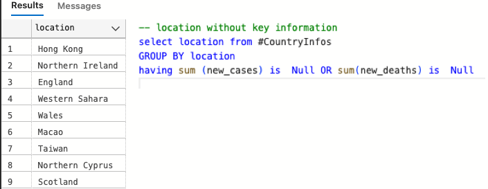

highlight important statistics using SQL and Tableau
The first step is to find some valuable and trustworthy data.
A good place to look for valuable data ist OurWordInData. I chose to use the current version of COVID-19 Dataset downloaded from here. The dataset has many columns (67), and after some exploration, I'm going to use 12 of them and must of them:
- continent
- location
- date
- population
- new_cases
- new_deaths
- new_vaccinations
- extreme_poverty: Share of the population living in extreme poverty
- male_smokers
- female_smokers
- population_density: measured in square kilometers
- human_development_index: score from 1 to 100
There are some rows in the dataset that do not pertain to a specific country; instead, they
contain information about continents and income levels of people. We need to be aware of these
rows.
 My first step is to create a temporary table and put all the needed information for further
calculations in it.
My first step is to create a temporary table and put all the needed information for further
calculations in it.
-- create temp table
CREATE TABLE #CountryInfos(
continent VARCHAR(50),
location VARCHAR(50),
date Date,
population FLOAT,
new_cases FLOAT,
new_deaths FLOAT,
new_vaccinations FLOAT,
extreme_poverty FLOAT,
male_smokers FLOAT,
female_smokers FLOAT,
population_density FLOAT,
human_development_index FLOAT,
);
With tst as (
select continent,location,date,population,new_cases,new_deaths,new_vaccinations,
extreme_poverty,male_smokers,female_smokers
,population_density,human_development_index
from Covid..CovidData
WHERE continent is not null and location not like('%income%')
)
INSERT into #CountryInfos(continent,location,date,population,new_cases,new_deaths,new_vaccinations,
extreme_poverty,male_smokers,female_smokers
,population_density,human_development_index)
select * from tst;The basis of our calculations will be the values in the 'new_cases' and 'new_deaths' columns. Let's check the availability of these values in our new table! 
-- deleting the locations without key information
delete from #CountryInfos
where location in (select location from #CountryInfos
GROUP BY location
having sum (new_cases) is Null OR sum(new_deaths) is Null)Now we are good to go for calculations and create useful information for presentation in Excel or Tableau.In the first part, we are looking to perform calculations based on cumulative numbers from 05.01.2020 up to the current date of writing this statistic (25.03.2024) .
--cumulative numbers
WITH cum_calc as(
select continent,location,population,human_development_index,extreme_poverty,male_smokers,female_smokers,population_density,
convert(DECIMAL(4,2), (sum(new_cases) / NULLIF(max(population),0) * 100)) as Infected_Percentage_of_Population,
convert(DECIMAL(4,2), (sum(new_deaths)/ NULLIF(sum(new_cases),0) * 100)) as Died_Percentage_of_Infected,
sum(new_deaths) as count_of_deaths,
sum(new_cases) as count_of_infectetion,
convert(decimal(5,2),(sum(new_deaths) / sum(new_cases) - 1.0 ) * -100) as recovered_percentage
from #CountryInfos
GROUP BY continent,location,population,human_development_index,extreme_poverty,male_smokers,female_smokers,population_density
)
select * from cum_calc
where Infected_Percentage_of_Population <> 0 and Died_Percentage_of_Infected <> 0
order by count_of_deaths descOne example of creating charts with generated information could be:

In the next part, we are going to calculate similar numbers as above, but on a daily basis.
-- day by day calcultions
select continent,location,population, date ,
sum(new_cases) OVER(partition by location order by date) as sum_of_infected_people,
sum(new_deaths) OVER(partition by location order by date) as sum_of_died_people,
convert(DECIMAL(8,2),((sum(new_deaths)OVER(partition by location order by date))/
Nullif(sum(new_cases)OVER(partition by location order by date),0)* 100))
as deadly_percentage_of_infection,
convert(DECIMAL(8,2),((sum(new_vaccinations)OVER(partition by location order by date))/
Nullif(Max(population)OVER(partition by location order by date),0)* 100))
as vaccinated_percentage_of_population,
sum(new_vaccinations) OVER(partition by location order by date) as sum_of_new_vaccinations,
CAST(human_development_index as decimal(5,2))as human_development_index,
CAST(extreme_poverty as decimal(5,2))as extreme_poverty,CAST(male_smokers as decimal(5,2))as male_smokers,
CAST(female_smokers as decimal(5,2)) as female_smokers,CAST(population_density as decimal(7,2))population_density
from #CountryInfos
where new_deaths<> 0 or new_cases<> 0 or new_vaccinations<> 0
ORDER by location,dateOne example of creating charts with generated day by day information could be: